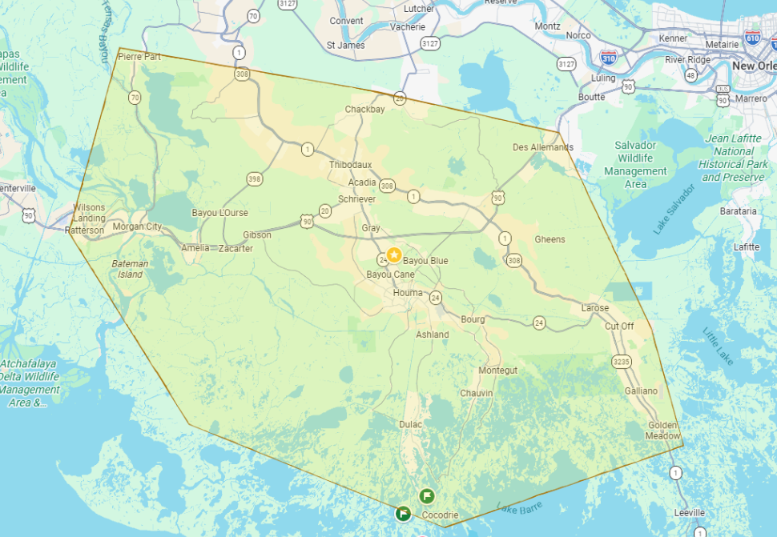

// from $65
A rock chip is a small impact point in your windshield usually no bigger than a quarter and caused by gravel, debris, or road hazards while driving. It might look minor, but every chip is a weak point in the glass.
Left untreated, temperature swings, vibration, and everyday road stress can cause that small chip to spread into a long crack, turning a cheap, 15-minute repair into a full windshield replacement. Fixing it early keeps the glass strong, preserves your factory seal, and saves you money.
We examine the chip under light to determine its size, depth, and type. This tells us whether it's repairable or if the damage is too severe. Most chips smaller than a quarter qualify for repair.
Any loose glass, dirt, or debris is carefully removed from the chip using a specialized pit drill and vacuum. A clean impact point ensures the resin bonds properly to the glass.
A professional-grade injector is placed directly over the chip and used to push optical-clarity resin into every crack and void under controlled pressure, fully filling the damaged area.
A UV curing lamp is applied directly over the repaired area. The UV light hardens the resin within minutes, bonding it permanently to the surrounding glass and restoring structural integrity.
Any excess cured resin on the surface is carefully razored flush, then the area is polished to restore optical clarity. We do a final inspection to confirm the chip is sealed and the glass is strong.
// from $249
A windshield replacement is recommended when damage is too large, too deep, or in the wrong spot to safely repair, such as long cracks, damage in your direct line of sight, or chips near the edge of the glass where structural integrity is compromised. Your windshield isn't just a window, it's a structural part of your vehicle that supports the roof in a rollover and helps your airbags deploy correctly.
We don't stop at windshields, either. Our team handles all types of auto glass, back glass, door and side windows, quarter glass, and yes, even sunroofs and moonroofs. Whether it's a full replacement or a specialty piece, we source OEM-grade glass, recalibrate ADAS safety systems where needed, and make sure everything is properly sealed before you drive away.
We inspect the full extent of the damage to determine whether repair or full replacement is the right call. Cracks longer than six inches, damage in the driver's line of sight, or chips near the edges typically require replacement.
The damaged windshield or glass panel is carefully cut free using specialized tools to avoid damaging the vehicle's frame, paint, or surrounding trim. All old adhesive and debris is cleared from the pinch weld.
The frame is cleaned, primed, and prepped to ensure a proper bond. A fresh bead of OEM-grade urethane adhesive is applied around the entire pinch weld to create a watertight, structurally sound seal.
The new OEM-grade glass is precisely set into position and pressed firmly into the adhesive. Suction cups and alignment guides ensure the glass seats correctly and evenly across the entire frame.
We check every edge for gaps, leaks, or alignment issues before you leave. The windshield is taped to the frame of the vehicle to ensure it stays in place while the adhesive cures. The tape can be removed the next day.
// new glass, same safety
ADAS stands for Advanced Driver Assistance Systems, the cameras and sensors built into your windshield area that power features like lane departure warning, automatic emergency braking, adaptive cruise control, and collision alerts. Many of these cameras are mounted directly to the windshield, which means even a fraction of a millimeter of misalignment after a glass replacement can throw off how your car "sees" the road.
That's why recalibration is necessary. It's a safety step. An uncalibrated system can misread lane lines, brake too late, or miss a hazard entirely. The good news is that for you, it's effortless. Recalibration is built into our replacement process from the start, so there's no extra appointment to schedule and no separate shop to visit. We handle the entire thing in-house, confirm everything's reading correctly before we hand back your keys, and you drive away with your safety systems working exactly as the manufacturer intended.
For more information, check out this video by Autel.
// WE COME TO YOU
You don't have to rearrange your whole day to get your auto glass fixed. Our mobile service brings the shop straight to your driveway, your office parking lot, even a job site, so you can keep your day moving while we take care of the glass.
We can often get to you the same day you call, and there's no compromise on quality just because we're not under our own roof. Every mobile job gets the same OEM-grade glass, proper urethane cure times, and ADAS calibration as a job done in-shop. If we can do it at the shop, we can do it in your driveway — chip repairs, full windshield replacements, you name it.
From Pierre Part in Assumption Parish all the way down to Port Fourchon in Lafourche Parish, we service the local southern Louisiana communities.
